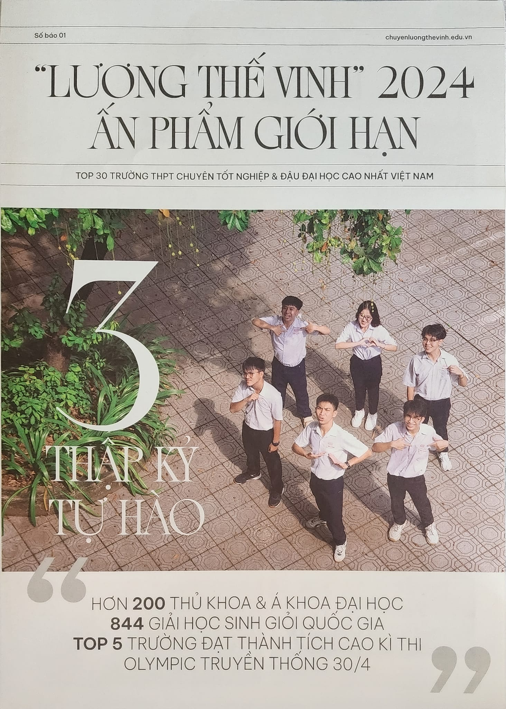

Đại Lễ Kỷ Niệm 30 Năm Ngày Thành Lập Trường THPT Chuyên Lương Thế Vinh (1994 – 2024)
Dấu mốc lịch sử ba thập kỷ ươm mầm tài năng của tỉnh Đồng Nai; dịp hội ngộ các thế hệ thầy cô giáo và cựu học sinh; tổng kết chặng đường phát triển rực rỡ và phát hành ấn phẩm Kỷ yếu 30 năm.
- Ôn lại truyền thống vẻ vang từ lớp chuyên Toán thí điểm năm học 1982–1983 tại Trường PTTH Ngô Quyền.
- Tri ân sâu sắc các Nhà giáo Ưu tú, cán bộ quản lý và giáo viên qua các thế hệ đặt nền móng xây dựng trường.
- Khẳng định vị thế trường THPT chuyên trọng điểm với thành tích xuất sắc trong đào tạo nhân tài cho đất nước.
Sự Kiện & Dấu Ấn Hoạt Động Tiêu Biểu

THPT Chuyên Lương Thế Vinh Xuất Sắc Giành 31 Giải Kỳ Thi Học Sinh Giỏi Quốc Gia
Đội tuyển học sinh giỏi tỉnh Đồng Nai do nhà trường bồi dưỡng ghi dấu ấn với 31 giải quốc gia (gồm 8 giải Nhì, 9 giải Ba và 14 giải Khuyến khích) trên các bộ môn Toán, Tin học, Vật lý, Hóa học, Sinh học, Ngữ văn và Tiếng Anh.

Ghi Dấu Ấn Tại Cuộc Thi Khoa Học Kỹ Thuật Quốc Gia Với 2 Dự Án Đạt Giải
Học sinh nhà trường khẳng định năng lực nghiên cứu ứng dụng thực tiễn với Giải Nhất toàn quốc của Dự án Thiết Kế AcuIRpen và Giải Ba toàn quốc của Dự án Bloomind tại Cuộc thi KHKT cấp Quốc gia.

Đoàn Học Sinh Chuyên Lương Thế Vinh Giành Giải Nhất Toàn Đoàn Trại Hè Phương Nam IX
Tranh tài cùng các trường THPT chuyên hàng đầu khu vực phía Nam tại Trại hè Phương Nam lần thứ IX năm 2026, đội tuyển nhà trường xuất sắc dẫn đầu bảng xếp hạng huy chương, nối dài truyền thống học tập xuất sắc.

Sôi Nổi Giải Bóng Đá Học Sinh LTV Football Tournament Niên Khóa 2024
Giải đấu bóng đá thường niên thu hút sự tham gia tranh tài của các khối chuyên trên sân cỏ nhà trường, tạo sân chơi rèn luyện sức khỏe, tinh thần bền bỉ và sự gắn kết đồng đội cho học sinh.

Đêm Văn Nghệ "Lương Thế Vinh Tôi Yêu" & Không Khí Rộn Ràng Của Hội Xuân Đón Tết
Chuỗi hoạt động văn hóa học đường truyền thống do Đoàn trường tổ chức với các gian hàng ẩm thực dân gian, trò chơi tập thể và sân khấu biểu diễn âm nhạc đặc sắc, gắn kết các thế hệ học sinh chuyên.

Xuất Bản Ấn Phẩm Kỷ Yếu 30 Năm "THPT Chuyên Lương Thế Vinh: Khát Vọng & Tự Hào"
Cuốn sách lưu giữ những tư liệu lịch sử, bài viết tâm huyết và hình ảnh hoạt động suốt 30 năm xây dựng, phát triển của ngôi trường chuyên đầu tiên và duy nhất của tỉnh Đồng Nai.
Cột Mốc Tiêu Biểu & Dấu Ấn Lịch Sử
Giải Nhất Toàn Đoàn Trại Hè Phương Nam IX & 2 Dự Án KHKT Quốc Gia
Tiếp tục dẫn đầu các trường chuyên khu vực phía Nam về thành tích Olympic và sáng tạo khoa học kỹ thuật ứng dụng.
31 Giải Học Sinh Giỏi Quốc Gia & 442 Giải Học Sinh Giỏi Cấp Tỉnh
Khẳng định chất lượng bồi dưỡng mũi nhọn bền vững trên toàn bộ 7 khối môn chuyên truyền thống của nhà trường.
Kỷ Niệm 30 Năm Ngày Thành Lập Trường (1994 – 2024)
Hội ngộ các thế hệ thầy trò qua 30 năm, tổng kết chặng đường ươm mầm tài năng và định hướng phát triển giai đoạn mới.
Khánh Thành Cơ Sở Độc Lập 2,7 Hécta Tại Biên Hòa
Chuyển từ cơ sở mượn ban đầu tại Trường PTTH Ngô Quyền về khuôn viên sư phạm riêng biệt, tạo tiền đề bứt phá toàn diện.
Ghi chú về nguồn thông tin & Thông báo học đường
Chuyên trang Tin tức & Sự kiện này đóng vai trò lưu trữ và giới thiệu các cột mốc, sự kiện tiêu biểu và thành tựu vàng son của Trường THPT Chuyên Lương Thế Vinh. Các thông báo hành chính định kỳ của Ban Giám hiệu, thông tin thời khóa biểu và hoạt động tuần được nhà trường công bố chính thức qua hệ thống bảng tin và các văn bản điều hành nội bộ.
Kênh Tiếp Nhận & Điều Hành Thông Tin
-
Hành chính
Văn phòng trường: Tiếp nhận thông tin hành chính & văn bản chính thức
-
Phong trào
Đoàn trường: Tổ chức hoạt động thanh niên, phong trào tự quản & CLB
-
Nội bộ
Bảng tin sư phạm: Lịch học tập, phân công chuyên môn & kế hoạch tuần